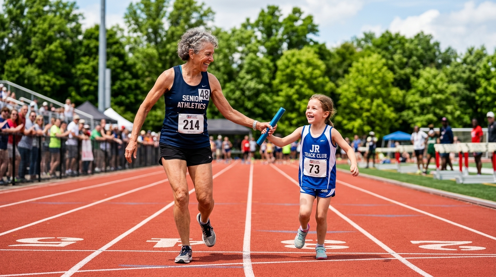

La Nostra Visione
La visione di Virtus Groane ASD è la promozione della pratica sportiva e dei valori educativi dello sport a tutte le età, attraverso l'Atletica Leggera, il Triathlon, la Running School, il fitness con Mamme che Sport! e il Nordic Walking.
I nostri corsi sono guidati da tecnici qualificati ed entusiasti. Nel settore giovanile poniamo al centro dell'apprendimento i tre schemi motori fondamentali: correr, saltare e lanciare, coltivando parallelamente il rispetto reciproco, la crescita personale e l'amicizia tra ragazzi e istruttori.

Generazioni a confronto: il valore della continuità e della passione sportiva in Virtus Groane ASD.
Il Nostro Impegno: Dal Settore Giovanile ai Master
L'avviamento agonistico all'atletica leggera inizia dai 12 anni. Il nostro settore giovanile è il cuore pulsante della società: non solo per le soddisfazioni nei campionati provinciali e regionali, ma per lo straordinario spirito di squadra che unisce atleti, tecnici e famiglie.
Il settore Amatori e Master accoglie podisti e triatleti di ogni livello, impegnati in prestigiose maratone e mezze maratone internazionali, gare su strada, trail immersi nella natura e competizioni multidisciplinari.
A partire dal 2026, offriamo alle ragazze e ai ragazzi del settore Assoluti la preziosa opportunità — accolta finora con entusiasmo da tutti i nostri atleti — di continuare ad allenarsi presso i nostri centri e, contemporaneamente, di tesserarsi e gareggiare per due società più grandi e strutturate di Virtus Groane.
Come Siamo Arrivati ad Oggi
Fondazione della società sportiva con l'obiettivo di diffondere la cultura dello sport e dell'atletica tra i giovani del territorio.
La società promuove storiche manifestazioni podistiche sul territorio (tra cui la "Mezza delle Groane" e corse nel circuito provinciale), attirando migliaia di appassionati.
Avviene il rinnovo di denominazione ufficiale in Virtus Groane ASD: un progetto rinnovato che abbraccia l'intero territorio delle Groane (Senago, Solaro, Limbiate) e si apre al Triathlon, al Nordic Walking e al fitness outdoor.
Iscritta al Registro Nazionale delle Attività Sportive Dilettantistiche (RASD) ed affiliata a FIDAL, FITRI ed AICS, Virtus Groane ASD continua a promuovere lo sport per tutte le età con energia, passione e trasparenza.